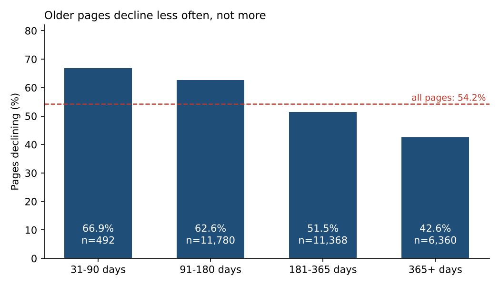
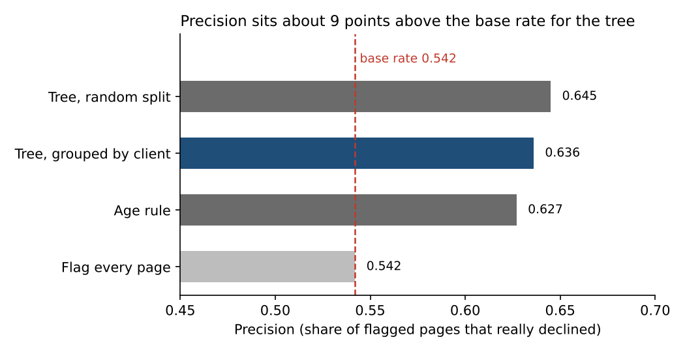
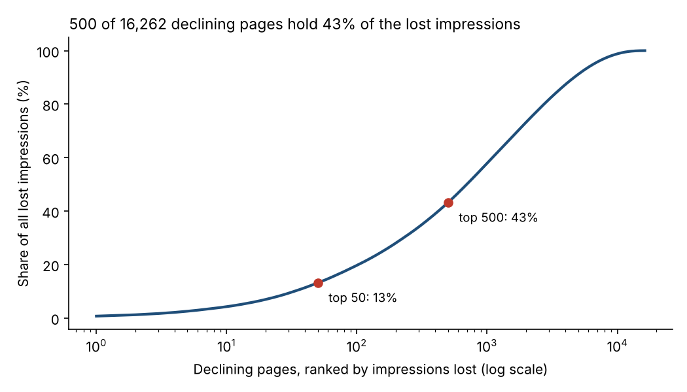

Which pages are losing search traffic, and does age explain it?
Abstract
An editor can review only a few dozen pages a week, so which pages should come first? We asked whether a page's age and recent traffic can flag content that is losing search impressions, and whether a trained decision tree beats a one-line age rule. We used 30,000 pseudonymised pages from 32 clients in FlyRank's internship dataset, labelling a page as declining when its impressions in the last 30 days fell more than 20% below the 30 days before, and we validated with client-grouped folds plus a leakage audit. In this snapshot 54% of pages were declining; the tree's precision was 0.64 against a 0.54 base rate and 0.63 for the age rule, and its higher recall came mostly from flagging more pages. We turn the result into a ranked, human-reviewed queue for decision-support, and we make no claim that refreshing a flagged page recovers its traffic.
1. Introduction
A content team has more pages losing traffic than hours to fix them. A common rule says older content is stale and should be refreshed first. Before building any model we checked that rule against the data, because a model built on a wrong assumption only reproduces it with more decimals.
The decision this supports is narrow: which pages a person looks at first this week. It is not a forecast of what happens after a refresh.
2. Data
We used FlyRank's pseudonymised internship release. The main analysis uses its starter file: 30,000 pages from 32 clients, each with trailing 90-day search metrics, page age, and the last-update date. Client and page identifiers are hashed, and no page text is included. We separately confirmed the data contract on one middle month of the larger warehouse table (9,841,378 page-day rows for March 2026). That month showed Search Console data available on 36.7% of rows and Analytics data on only 4.2%, so we did not build features on Analytics.
Label. A page is declining when impressions in the last 30 days are more than 20% below the 30 days before. This is a measured change over two windows already in the past. The share declining is 54.2% (16,262 pages).
Excluded. The trend columns themselves are never features, because the label is built from them. Identifiers are used only for grouping. Pages under 31 days old are not in this slice.
3. Methodology
Signal checks first. Before writing a rule we grouped pages by age and by traffic volume and printed the group sizes.

Methods compared. (a) an age rule that flags pages 31 to 180 days old; (b) a decision tree of depth 4 trained on page age tier and 90-day impressions; (c) flagging every page, as the floor.
Validation. Pages from the same client share hidden traits, so a random split can flatter a model. We used five-fold validation grouped by client, so every score comes from clients the model had not seen, and we report the random-split number beside it.
Leakage audit. The 90-day impressions column contains the very 30-day windows the label compares (correlation 0.92 with last-30-day impressions), so it fails the timeline test. We rebuilt the features from windows that precede the label window (age, impressions in days 31–60, and days 61–90) and compared. As a check on the test itself, adding the label's own source column pushed the score to 1.000, so the harness would catch a serious leak.
4. Results
| Method (5-fold, grouped by client unless noted) | Accuracy | Precision | Recall | Share flagged |
|---|---|---|---|---|
| Flag every page (floor) | 0.542 | 0.542 | 1.000 | 1.000 |
| Age rule, 31–180 days | 0.562 | 0.627 | 0.473 | 0.409 |
| Tree: age + 90-day impressions, random split | 0.644 | 0.645 | 0.763 | 0.641 |
| Tree: age + 90-day impressions | 0.639 | 0.636 | 0.777 | 0.662 |
| Tree: age only | 0.552 | 0.566 | 0.739 | 0.707 |
| Tree: age + days 31–60 + days 61–90 (no overlap)* | 0.668 | 0.645 | 0.861 | 0.724 |
Base rate (share declining) = 0.542. *This row uses a minimum of 50 pages per leaf; the others do not.

What the numbers support. The tree and the age rule have similar precision. The tree's higher recall (0.78 vs 0.47) comes mainly from flagging more pages (66% vs 41%); flagging every page already gives recall 1.0. Across the five folds the tree averaged precision 0.631 against the rule's 0.608, with the rule ahead in one fold, and the share declining per fold ranged from 0.38 to 0.65. Adding the overlapping 90-day column to the clean features changed accuracy by only about half a point (0.668 to 0.673), so we did not measure a large inflated score from it. Most of the gain over age alone came from impressions in days 31–60, which are the denominator of the label, so we read the model as a short-horizon momentum signal and not a page lifecycle model.
Where it is wrong. Among pages the tree wrongly flagged, 55% were stable and 38% were growing. Among the largest missed decliners, four of five were pages older than 365 days; that pattern comes from five examples and was not tested.
5. Limitations
- One snapshot of 32 clients. No page is followed over time, so these are associations in this data, not a forecast.
- The model's precision sits roughly 10 points above the base rate. It is a weak tie-breaker, not a verdict.
- Pages updated in the last 30 days declined less within each age tier (for example 41% against 59% at 181–365 days). Editors may have chosen which pages to update, and 68% of all pages sit in the 0–30 day update tier, so this does not show that refreshing causes recovery.
- A few clients dominate the losses: the top five hold about 84% of impressions lost on declining pages. A site-wide event can look like many page problems.
- Analytics data was available for only 4.2% of the March 2026 warehouse rows, so engagement-based claims are out of scope.
6. Ranked recommendations
These are decision-support for a human reviewer, not automation. Each page gets one reason code and one action, and the queue is ranked by impressions lost, with the model's probability as a tie-breaker.
| Reason code | When | Action | Pages |
|---|---|---|---|
decline_large_loss | declining, lost 500+ impressions | review for refresh | 4,656 |
decline_moderate_loss | declining, lost 100–499 | watch | 4,802 |
decline_small_loss | declining, lost under 100 | no action | 6,804 |
not_declining | stable, up, new or flat | no action | 13,738 |
The 100 and 500 cut-offs are first guesses, not tuned values. At 50 pages a week, 4,656 pages would take about 93 weeks to read, so the cut-offs are too loose to act on as written and the weekly capacity does the real selecting. A weekly list of 50 pages with at most 10 per client holds about 13% of all lost impressions. Life stage gives the reviewer a starting hypothesis (untested): young pages, check search intent and indexing; mid-age pages, check outdated facts and links; pages over a year old, consider merging or pruning.

A person checks before acting: the client-level cause first (4 of 32 clients have at least 75% of their pages declining), then seasonality, work already in progress, data quality for both windows, and whether refresh, merge or prune fits.
Do not automate: publishing, rewriting or deleting pages; promising a client that a refresh will recover traffic; acting on a client-wide drop before it is checked; or using the model score alone to include or exclude a page.
Re-check when: the share of declining pages moves by more than 10 points, median previous-30-day impressions moves by more than 30%, tree precision on newly measured pages falls below the base rate plus 5 points, or one client holds more than 30% of lost impressions. These thresholds are rules of thumb, not tuned values.
7. Reproducibility
Everything is in the project repository: https://github.com/sarahibdah/Flyrank-ML-Internship-Sarah. The analysis uses a fixed random seed and reads the starter file directly from the repo.
- Baseline rule and ranked queue
- Model against baseline
- Validation and leakage audit
- Action playbook and exports
8. Acknowledgments and data credit
Built on the FlyRank ML Internship dataset, a pseudonymised release of real search and analytics data from flyrank.ai. No client names, page addresses, page text or search queries appear on this page. Thanks to the FlyRank internship mentors for the sessions and feedback behind this work.